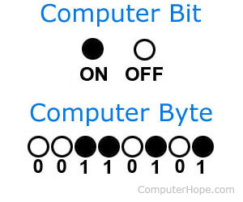

Bit og Byte
Bit
Dei aller fyrste datamaskinane var mekaniske og kunne vere laga av mutterar, tannhjul og metallstenger. I overgangen frå mekanisk til elektronisk datamaskinn fann ein ut at den enklaste måten å lagre informasjon på er å ga to «tilstandar» straum av, og straum på. Var straumen av skulle talet 0 indikere dette. Dersom straumen var på der imot, skulle talet 1 indikere dette. Men korleis kan ein lagre informasjon eller sende signal ved hjelp av berre 0 tal og 1 tal? Eit døme kan være utelampar. Visst du har to utelampar, ein ved bakdøra og ein ved hovudinngangen. Då kan du avtala med naboen din at dette er kodane: Dersom begge lampane er på er eg heime. Dersom lampen med hovuddøra er på, men lyset med bakdøra er av. Er du ute, men kjem at om ikkje så lenge. Dersom lyset bak er på, men det er av ved hovuddøra betyr det at du er vekke i ein lengre periode. Allereie no er dette litt komplisert, berre med to lampar eller bit. To bit vil gje deg 4 forskjellige val: 0-0, 1-0, 1-1, 0,1 dette kallar me binære tal.
Byte
8 bit er ein byte. Ein byte er altså delt opp i 8 friksjoner av bit. Det er altså 256 val i ein byte. Ein byte kan sjå slik ut 1011 1101, i vanlege tal hadde dette blitt 128 + 0 + 32 + 16 + 4 + 0 + 1 = 189. verdien av denne byten er altså 189. 8 bit blir altså kalla ein byte. Og i mange datamaskiner er dette den minste plassen du kan setje av til bruk i minnet. Dei 256 ulike val muligheitene du får gjeld ofte for ein farge eller eit lydnivå, eller eit teikn i eit teiknsett i datamaskina.
| Bit | 1 | 2 | 3 | 4 | 5 | 6 | 7 | 8 |
| Val | 2 | 4 | 8 | 16 | 32 | 64 | 128 | 256 |